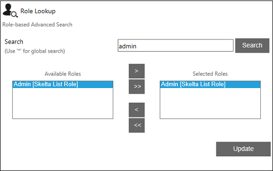

No
Email: BCC Resource
You can set the actors to whom the Email is to be sent as BCC in this property window. To open this window, click the button for the 'BCCResource' property.
The following image shows the BCCResource property dialog box:
The Assign Actor window provides the flexibility of assigning actors either by building an expression or through User lookup, Role lookup or Workflow Initiator. This window has a set of radio buttons and drop downs to select the actor and different parameters required to build an expression to identify the actor(s). You can also find related buttons next to the drop downs.
Different Methods of Assigning an Actor
- Assigning an Actor by building an expression:
Filter Condition is the default option that is selected when the Assign Actor window is accessed. This option allows you to build an expression to identify the actor. The section below explains how the set of drop down buttons helps you choose different parameters required to build and expression.- The Providers drop-down- You can select the required provider from the Providers drop-down.
- The Attribute drop down - You can select the attribute to be used to identify the actor, e.g., "AdministratorId", in this drop down.
- The Operator drop down - You can select the operator for the expression here. E.g., "="
- The Value type drop down - You can select the type of value to assign to the attribute in the expression. You can specify Variable, Content, Value, or XMLVariables here.
- The Value text box/drop down - You can specify the actual value to assign to the attribute. The control displayed depends on the option selected in the preceding drop down.
- If you had selected "Value", it will display a text box here. You can enter a discrete value in this box to complete the expression.
- If you had selected "Variable", "Content", or "XMLVariables", there will be a drop down instead of the field. This drop down will have the variable collection or content collection or XMLVariables collection from which you can select an appropriate option.
- The Logical operator drop down - You can select logical operators from this drop down to build compound expressions. The options available are "End", "And", "Or", "')' And", and "')' Or". You can select "End" to complete the expression.
- Add - You can click this button to add the new expression to the text area.
- Undo - You can click this button to remove a condition you have added to the expression.
At the bottom of the window you will find the following buttons:
- Clear - You can click this button to clear the expression shown in the text area. This is useful when you want to build a new expression.
- Update - You can click this button to save the expression that has been added to the text area.
- Assigning an Actor through User Lookup
Through the User Lookup you can search and select user(s). This automatically builds the expression and the same is updated in the text area. Follow the steps given below to assign an actor through User Lookup- Select the User Lookup option.
- The User Lookup dialog is displayed, search and select the required actor.

- Click Update in the User Lookup dialog and verify the Assign Actor window.
In the Assign Actor window, you will see that an expression is displayed, refer the image below:
- Click Update in the Assign Actor(s) window to update the selected actor(s) in the Assign Actor property.
Actor(s) selected through User Lookup will be updated in the Assign Actor property.
- Assigning an Actor through Role Lookup
Through the Role Lookup you can search and select a specific role. This automatically builds the expression and the same is updated in the text area. Follow the steps given below to assign an actor through Role Lookup- Select the Role Lookup option.
- The Role Lookup dialog is displayed, search and select for the required role.
 - Click Update in the Role Lookup dialog and verify the Assign Actor window.
In the Assign Actor window, you will see that an expression is displayed, refer the image below:
- Click Update in the Assign Actor(s) window to update the Assign Actor property.
- Assigning an Actor through Workflow Initiator
Selecting the Workflow Initiator allows you to assign the task to the Workflow Initiator, that is the user who closes the workflow. An expression is built automatically and updated in the text area of Assign Actor window, refer the image below: